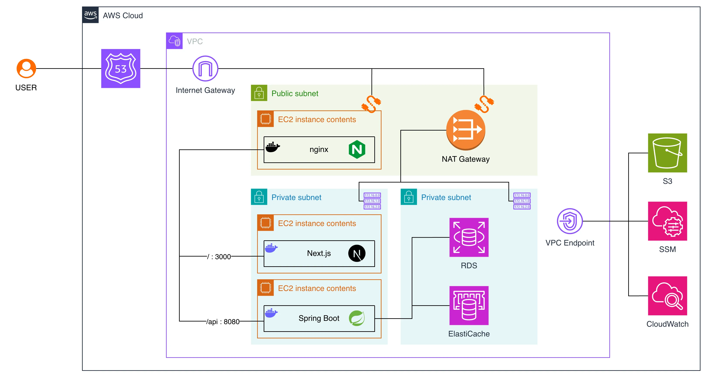
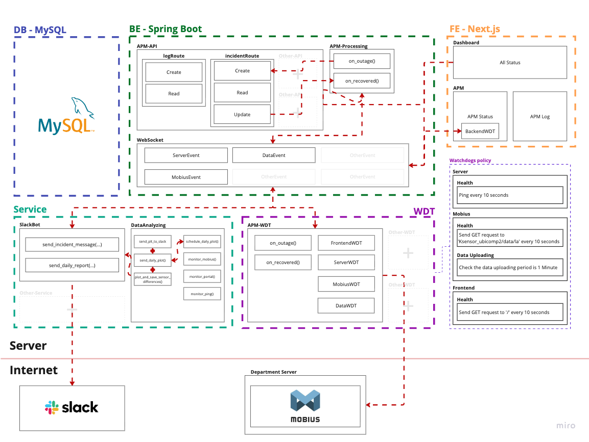
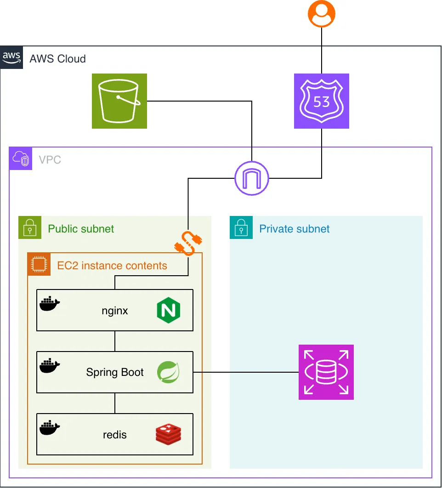
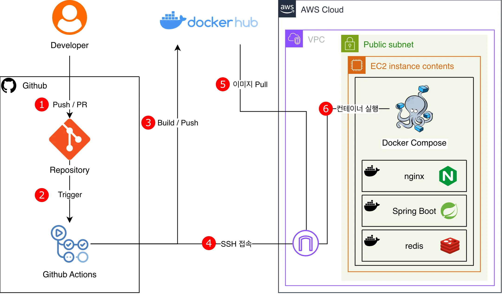

Reference / Horizontal Image Layouts
가로 이미지 배치 레이아웃 10안
메인 포트폴리오의 선, 여백, 회색 톤을 유지하면서 아키텍처 이미지를 가로로 배치하는 방식만 다르게 정리한 레퍼런스입니다. 모든 안은 이미지 자체 테두리를 제거하고, 스크롤 가능성을 다른 단서로 표현합니다.
01
Peek Rail
현재 방향과 가장 가깝지만, 우측 이미지를 일부 남겨 스크롤 가능성을 더 직접적으로 보여주는 안.
drag right




02
Side Label Shelf
좌측 라벨을 고정하고 이미지만 움직이는 느낌. 본문 섹션과 연결성이 높고 과하게 장식적이지 않음.
horizontal
03
Plate Shelf
이미지를 카드처럼 감싸지 않고, 각 이미지 사이에 얇은 세로선을 둬 문서형 레이아웃에 가깝게 정리.
slide
04
Numbered Filmstrip
이미지마다 작은 번호를 붙여 순서감을 만들고, 우측 여백을 크게 남겨 계속 이어지는 느낌을 줌.
01 / 04
05
End Rail Cue
스크롤바 대신 우측에 세로 레일을 두는 안. 메인 페이지의 선 기반 디자인과 가장 잘 붙습니다.
scroll
06
Two Row Conveyor
이미지가 많아질 때 유리한 2단 가로 배치. 한 줄보다 높이는 조금 늘지만 화면에 보이는 정보량이 큽니다.
more items
07
Annotation Rail
이미지 스트립 우측에 설명 칼럼을 붙이는 안. 스크롤은 이미지 영역에만 걸리고 텍스트는 고정됩니다.
fixed text
08
Captioned Shelf
이미지 아래 짧은 캡션을 두는 안. 프로젝트별 이미지가 섞일 때 각 이미지의 출처를 바로 알 수 있습니다.
captions
09
Separated Image Run
이미지 사이에만 선을 넣어 문서의 표처럼 보이게 하는 안. 이미지에는 테두리를 주지 않아 답답함이 적습니다.
runway
10
Progress Track
숨긴 스크롤바 대신 하단 진행 트랙을 쓰는 안. 실제 구현 시 드래그에 맞춰 진행률을 움직일 수 있습니다.
track